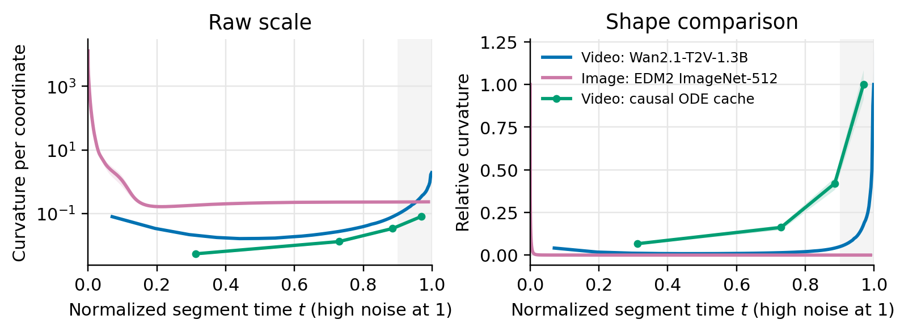
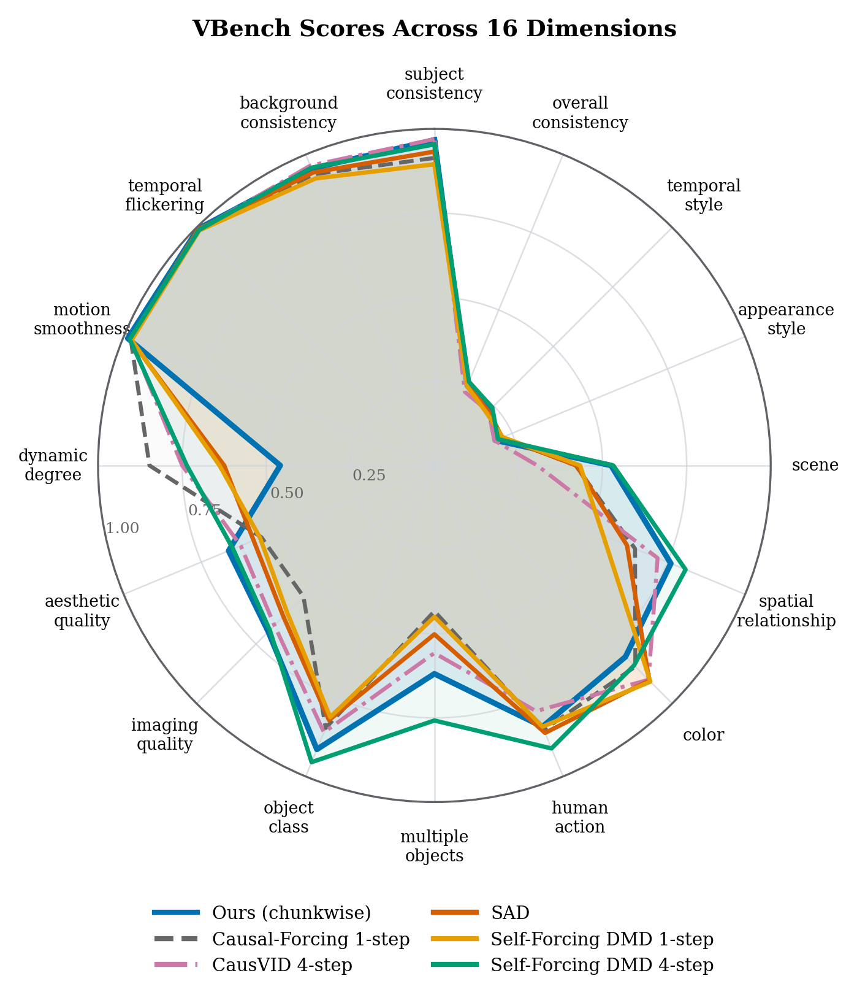

Abstract
Stable one-step causal video generation
Existing few-step autoregressive video generators often default to 4-step sampling and degrade sharply when pushed to one step. One-Forcing augments distribution matching distillation with an auxiliary adversarial signal over noised video latents. The fake-score transformer is reused as a joint diffusion critic and discriminator, providing complementary score-matching and density-ratio gradients without an extra video discriminator. On VBench, One-Forcing establishes state-of-the-art one-step causal video generation and remains competitive with strong many-step baselines.
One-Forcing against one-step causal baselines
Method
Adversarial distribution matching for causal generation
One-Forcing keeps the causal autoregressive generator and DMD objective, then turns the trainable fake-score network into a joint score critic and noised-latent discriminator. Real ODE latents and generated latents are noised at sampled timesteps and passed through the same transformer backbone, so adversarial feedback targets the same distribution used by the DMD gradient.

Analysis
Why one-step video needs distributional supervision
Video ODE trajectories concentrate curvature near the high-noise endpoint, making one-step trajectory following brittle. Distribution matching with adversarial noised-latent feedback directly improves the output distribution.


Gallery
Additional One-Forcing samples
Citation
BibTeX
@misc{feng2026oneforcing,
title = {One-Forcing: Towards Stable One-Step Autoregressive Video Generation},
author = {Feng, Jiaqi and Cui, Justin and Ban, Yuanhao and Hsieh, Cho-Jui},
year = {2026}
}